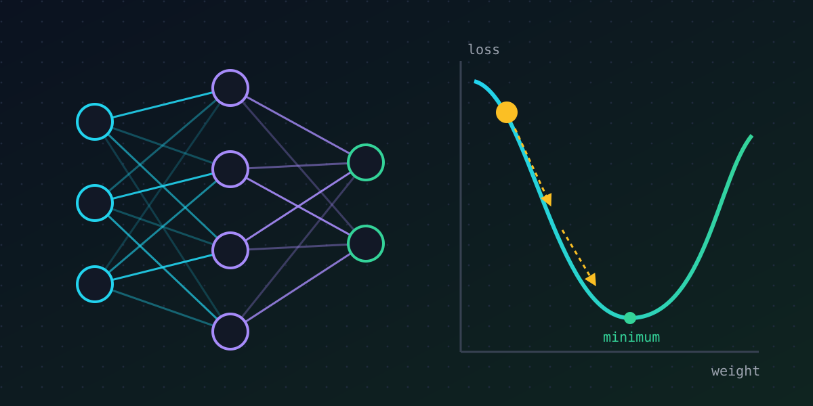

// machine learning · 7 min read
How neural networks learn (gradient descent without the calculus)
Published Nov 11, 2026

"The model learned to recognise cats." It's a sentence we read every day, and it hides something surprisingly mechanical. No understanding switches on. A machine turns millions of tiny dials, one small nudge at a time, until its mistakes get smaller. Here is how that works.
A model is a pile of dials
Start with something small. Suppose you want to predict a flat's rent from its size. A simple guess is:
rent = w × size + b
The numbers w (a weight) and b (a bias) are the dials. Set them well and the predictions are good. Set them badly and they're nonsense. Training means finding good settings automatically from examples.
A neuron in a neural network is this same idea with more inputs: multiply each input by a weight, add them up, add a bias, then pass the result through a simple squashing function called an activation. Stack thousands of neurons in layers, feed each layer's outputs into the next, and you have a neural network. Large language models have billions of these dials.
Step one: measure how wrong you are
To improve, the model needs a score for its mistakes. That score is the loss. For rent prediction it might be the average of the squared differences between predicted and real rents. For classifying images it measures how much probability the model gave to the wrong labels.
Lower loss means better predictions. Training has one goal: make the loss as small as possible.
Step two: walk downhill in the fog
Picture every possible setting of the dials as a point in a landscape, where height is the loss. You are standing somewhere on a hillside, in thick fog, and you want to reach the valley floor. You can't see the valley, but you can feel which way the ground slopes under your feet.
So you take a small step downhill. Then you feel the slope again and take another step. That's gradient descent. The gradient is the direction of steepest uphill for every dial at once, so you step the opposite way.
The size of each step is the learning rate, and it matters a lot:
- Too small, and training crawls along for ages.
- Too large, and you overshoot the valley, bounce up the other side, and the loss can even explode.
Step three: backpropagation does the bookkeeping
With billions of dials, how does the network know which way to turn each one? Backpropagation answers that efficiently. It starts at the loss and works backwards through the layers, working out how much each weight contributed to the error. One backward pass gives the slope for every weight at once, at roughly the cost of one forward pass.
In practice the network doesn't look at all the training data before every step. It grabs a small random mini-batch, estimates the slope from that, and steps. This is stochastic gradient descent: noisier, but far faster, and the noise even helps it escape poor spots in the landscape.
When learning goes wrong
- Overfitting. Given enough dials, a model can memorise its training examples, noise and all, instead of learning the pattern. It aces practice questions and fails the exam. The fix is to always check performance on validation data the model never trained on.
- Learning the shortcut. If every cow photo in your data has grass in the background, the model may learn "green means cow". It minimised the loss you gave it, not the goal you had in mind.
- A model too simple for the problem. A single neuron can only draw a straight line between classes. Some patterns, like the classic XOR problem, need hidden layers. You can see this for yourself in the lab.
The takeaway
Neural networks don't learn the way people do. They follow a very effective recipe: guess, measure the error, nudge every dial slightly downhill, and repeat millions of times. Knowing that recipe tells you both why they're powerful and why they confidently learn the wrong lesson when the data points that way.